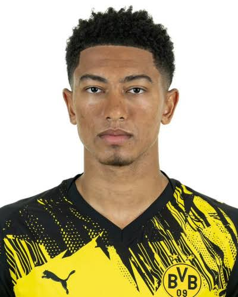

Jobe Bellingham

Jobe Bellingham (род. 23 сентября 2005 года) — английский футболист,
полузащитник клуба «Боруссия Дортмунд» и сборной Англии. Он является
младшим братом Джуда Беллингема, также профессионального футболиста.
Основные факты
- Дата рождения: 23 сентября 2005 года
- Клуб: «Боруссия Дортмунд»
- Позиция: Полузащитник
- Игровой номер: 7 в дортмундской «Боруссии»
Клубы
| Годы |
Клуб |
Голы |
| 2023–2025 |
Сандерленд |
11 |
| 2021–2023 |
Бирмингем Сити |
0 |
Главные достижения
- Победа в плей-офф Чемпионшипа с «Сандерлендом» в 2025 году.
- Награда лучшему молодому игроку Чемпионшипа сезона 2024/25.
- Включение в символическую сборную Чемпионшипа сезона 2024/25.
Джоб Беллингем в Википедии